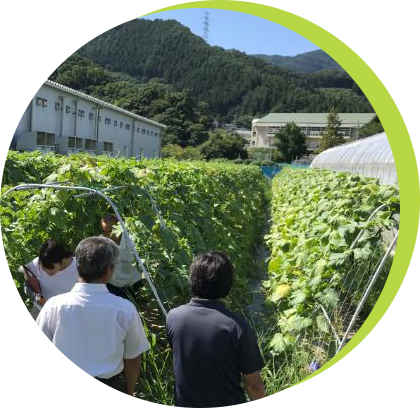
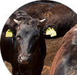
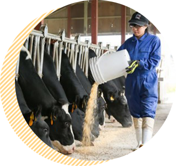

野菜と果実をメインに産地基盤強化と生産量の維持拡大を図ります。
需要の見込まれる品目・アイテムを産地へ提案し、各部署との連携により園芸産地の基盤強化と販売物の確保に向けて生産振興を図ります。特に、昨今市場が拡大している業務加工用取引を重点に業務を展開しています。また、今後予想される担い手不足や労働力不足の解消に向け、「スマート農業」をはじめ、作業の自動化や省力化を積極的に導入推進し、地域振興と持続的な農業を目指します。
需要の見込まれる品目・アイテムを産地へ提案し、各部署との連携により園芸産地の基盤強化と販売物の確保に向けて生産振興を図ります。特に、昨今市場が拡大している業務加工用取引を重点に業務を展開しています。また、今後予想される担い手不足や労働力不足の解消に向け、「スマート農業」をはじめ、作業の自動化や省力化を積極的に導入推進し、地域振興と持続的な農業を目指します。
業務用きゅうりの産地形成
長野県は葉洋菜の一大産地ですが、総合供給産地を
目指すうえで果菜類が
欠かせない存在となっています。
特に夏場～秋口のきゅうりは需要があるものの、
高齢化や収穫荷造り作業が大変なことから、
減少傾向で推移してきました

生産振興部 生産振興課
新規流通形態、省力化検討（キャベツ）

流通形態変更と省力化技術の研究・推進
カット野菜をはじめ、業務加工の市場が徐々に
拡大してきています。また、産地においては
栽培に係るコスト上昇がネックとなっており、
農家経営を圧迫しているのが実態です。
販売努力と並行してこれらの経費を下げることで
安定した農家所得を確保していく必要があります。
長野県の冷涼な気候風土と先人から培われた高い栽培技術により栽培された農産物を、お取引先様へ、食卓へ、四季を通じてお届けしています。南北に長く標高差に富んだ長野県では様々な農産物が生産されています。生産販売部では農産物ごとに担当部署をおき、生産から販売までを通じた業務を行っています。卸売市場流通を基本とした販売のほかに、お取引先との直接取引も行い新規顧客開拓にも取り組んでいます。また、付加価値商品開発やeコマース事業の展開、食育・花育活動に取り組んでいます。
澄みきった大空の中に輝く太陽、無限に広がる緑の空間の中に日本の屋根アルプスを象徴的にデザインし、JA長野県の発展とフレッシュな長野県の農産物を「信州」の文字で表したものです。
鉄拳動画制作プロジェクト
コロナ禍に「くだものを通じて元気をとどけたい」という
想いを込め、長野県産フルーツ4種類を
テーマに
長野県大町市出身のパラパラ漫画家・鉄拳さんと
イラストムービーを制作しました。
制作した動画は、青果売場や街頭ビジョン、
YouTube配信など幅広く活用しています。
果実便り -THE MOVIE-
果実の生育状況、生産者の作業内容について動画を
作成・配信しました。視聴者ターゲットは、
新型コロナウイルスの影響で、長野へ足を運べなくなった
取引先です。産地情報を月2回、
定期的に
発信することで商談を円滑に進め、
さらに産地アピールもはかることができました。
長野県の地域ごとに異なる気候や土壌、その多様な環境下で生産される様々な品目に、最適な農業資材を供給しています。
青果物の輸送、保管、荷扱いの流通過程の途中で発生する外的環境変化や異物混入等から内容物の品質を保護する機能を担う包装資材（段ボール・フィルム・パック類等）の製品化と供給を行っています。コスト抑制・省力化などの技術向上を図るとともに、安定供給に努めています。
地域ごとに異なる気候や土壌、作物に適合したBB肥料の開発、農薬の適正防除指導等を通じて、安全・安心で、持続性の高い農作物づくりに貢献するとともに、仕入れ機能や物流効率の向上を図ることにより生産資材価格の低減に取り組んでいます。また、農業資材専門店「JAファーム」他JA資材店舗の開発・運営支援を行っています。
農作業の省力化と農産物の高品質生産には欠かせない農業機械の供給を行っています。近年ではドローンをはじめとしたスマート農業のための機械取り扱いも進めています。また、アフターサービス充実のため、部品の迅速な調達（農機部品センター）や整備・修理体制の強化（農機整備センター）を図りながら、農作業事故防止に向けた啓発にも取り組んでいます。
一級建築士事務所という専門性と全員が一級建築士という強みを生かし、『建築』『農業施設』『住宅』をJA・組合員に提供しています。計画提案から設計、業者選定・入札・価格交渉、現場監理と一貫した体制（施主代行方式）により業務を行っています。

生産購買部 農業機械課
JAファンの獲得と
農家組合員のニーズに応える展示会の開催
農機＆資材フェスタの開催 in エムウェーブ
農機＆資材フェスタは、県下JAが総力を結集し、組合員のご要望に応える農機や生産資材等の実演・展示即売会を開催するとともに、担い手や新規就農者の皆様、また次世代ユーザーの皆様に向けて、生産性の向上と
コスト削減に向けたJA事業の取り組みを発信することを目的としています。通算23回開催しています。
えのき6K段ボール コスト抑制タイプ
えのき6K（200ｇ×30個入り）向けに、コスト抑制タイ
プの段ボールを開発しました。
えのきの詰め方を見直して
箱寸法を縮小し、紙の使用量を削減することによって
コスト抑制を図りました。
寸法は、将来的な
輸送体系の変更も見据えてパレットへの納まりが
いいように設計しています。
畜産酪農部門では、中小規模の畜産酪農業が中心である県内生産基盤の維持を目指し、様々な事業に取組んでいます。
畜産農家が生産した「安全・安心」な牛肉・豚肉・鶏卵を消費者に届けるために、関連団体と協力し、一貫した処理体制を構築しています。また、受精卵移植技術やSPF豚生産技術を活用し生産基盤の維持を図るとともに、県内外での販売促進を通じて、畜産農家の経営安定に努めています。

県内の約270戸の酪農家が生産した高品質な生乳を、季節ごとの乳量や需要の変化にあわせて、県内牛乳工場を通じて消費者にお届けしています。また、生産性の向上対策や集送乳体制の合理化により、酪農家の生産コスト削減を図っています。
牛受精卵をまとめて移植『新ETシステム』の取組み
専門チームを立上げ、そのチームで各農家の牛の状態を把握・管理し、ホルモン処置を行うことで
適期をコントロールし受精卵を一斉に移植。また、会の牧場での採卵のタイミングを合わせることで
新鮮受精卵の効率的な利用が可能となり安定的に素牛を確保できるようになりました。

畜産酪農部 酪農課
大自然の中で、農・食・命を学ぶ

八ヶ岳牧場で酪農体験『ふれあいファーム』
JA全農長野では八ヶ岳山麓に「八ヶ岳牧場」を運営しています。この牧場は、乳牛の育成や搾乳を主体とした
「生産牧場」であり、観光を目的としていません。しかし、日頃酪農と親しむ機会が少ない子供たちに、
生産牧場ならではの体験を通じて、酪農の「たのしさ」「すばらしさ」を伝えています。

地域の暮らしや農業生産に必要なエネルギー、生活用品を安定供給できるよう、幅広い事業を展開しています。燃料部門では、石油・LPガス・電気の仕入れ機能に力を入れて価格の低減を図っています。また中山間地等の給油所が減少していくなか、JAとの協同経営により地域の“SMILE STATION”として、地域を支える給油拠点を維持しています。生活部門では、定期的に食材・日用品などの生活必需品をご家庭にお届けする『まごころ宅配』や薬をお届けする『配置家庭薬』等の事業を展開し、地域に密着した、健康でより豊かな暮らしの提案を行っています。

燃料・ホームエネルギー課
ペーパーレスニーズへの対応と
業務合理化の実現
JA-LPガスポータルサイトシステムの構築
お客様の利便性・満足度向上を通じた囲い込みを図るとともにwebを媒体とした情報発信によるJAの
業務効率化とコスト削減を目指します。また、保安情報の“見える化”による
利用者への安心・安全なLPガス利用環境の提供を実現したいと考えています。

改正割賦販売法（割賦販売法の一部を改正する法律）対応
聞きなれない言葉ですが・・・要はクレジットカードの取扱いに関する法律です。
県下JAで利用している配達燃料油・LPガス・JAでんきの
クレジットカード決済システムに対して法律に準拠する対応が必要となりました。